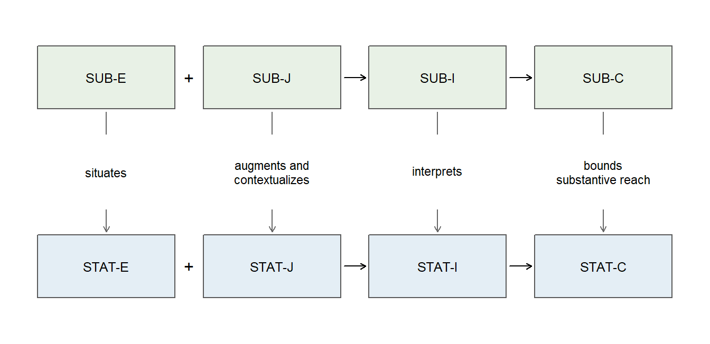
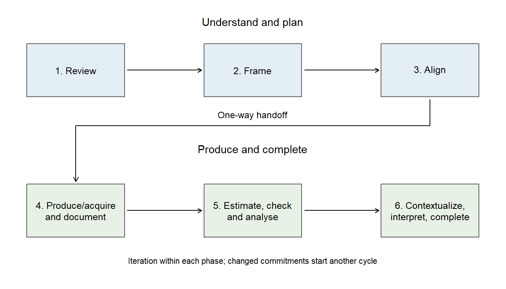

How to Read a Quantitative Study as an Argument
Argument Chapter A
NoteChapter overview
Read one research question and the answer a study offers. Follow the specific information supporting that answer across the paper, protocol, measurements and analytical materials. Distinguish a procedure from its rationale, an analysis from its claim, and identifying an argument from judging its quality. A documented construction history shows how researchers produce that support. The principal case is an invented feedback experiment; shorter prediction and regression reports show how the reading transfers. All necessary records are supplied here. This optional argument tutorial requires no programming and is not a prerequisite for the numbered methods chapters.
A published study asks a question and offers an answer. Between them are observations, the circumstances in which they arose, reasons for trusting a comparison, analytical work, and an interpretation. Much of that support lies outside the sentence reporting the main result. A protocol may explain allocation, an instrument may reveal what an outcome measures, and a supplement may show what changed when an unusual observation was omitted. Learning to connect those records is part of understanding quantitative research.
The invented feedback study will provide a complete example. Its reported assignment effect is 2.5 points, with a 95% interval from 1 to 4 points. Reading those numbers alone cannot tell us whether the study compared students or classes, what the score represents, or why the comparison could support an effect of assignment. The following sections make these connections explicit, then give less structured cases in which you must decide which connection matters.
From a Research Question to a Traceable Argument
Start with what the study asks and answers
Consider two extracts from the invented study. Their labels are illustrative locations in the teaching record, not quotations from an actual publication.
Paper, aim: We examined whether assigning explanatory rather than usual feedback changes average delayed achievement for the 480 eligible students in 24 participating classes.
Protocol, allocation: Twelve classes were randomly assigned to each format across the full pool of 24 classes. The comparison uses equally weighted class means and an uncertainty procedure reflecting class assignment.
The aim can be restated as a question: What is the average effect of assigning explanatory rather than usual feedback on delayed achievement for these eligible students? This is a reader’s formulation of the stated aim. It names a causal comparison, an outcome and a scope. An aim such as “improve education” would need these details before it could identify a quantitative question.
The estimand is the target quantity, here the student-average assignment effect for the eligible cohort. The estimate is the reported 2.5-point result. The reported answer is the study’s conclusion about that question. It can be cautious or overstated; the reader first identifies the answer that was actually given. Replacing it with a more defensible statement is an evaluation and revision, not a discovery about what the original sentence said.
A question-answer pair gives an argument its task. Evidence and methods are relevant through their contribution to this task. A well-computed coefficient can still concern the wrong outcome, follow-up time or unit. Conversely, a carefully supported answer can remain inconclusive. A research argument need not end with a positive result to succeed.
Four functions in two linked layers
An argument component names a function of information. Evidence supplies observations and their production record; Justification supplies invoked reasons and conditions; Inference connects those contributions through analysis and reasoning; a bounded Claim states the conclusion with its limits. The statistical and substantive layers are coordinated parts of one argument. The statistical layer follows the numerical target and analysis; the substantive layer keeps their meaning connected to the people, practices and question.
| Component | Statistical function | Substantive function | Connection |
|---|---|---|---|
| Evidence (E) | STAT-E: information about the observations, variables, and procedures through which the analysis data were produced or acquired | SUB-E: information about the people, setting, activities, and substantive meaning represented by those data | SUB-E situates STAT-E |
| Justification (J) | STAT-J: reasons and conditions invoked to support the intended statistical comparison and inference | SUB-J: domain-based reasons supporting measurement meaning, implementation, explanation, and applicability | SUB-J augments and contextualizes STAT-J |
| Inference (I) | STAT-I: the analytical reasoning and work connecting evidence and justification to statistical conclusions, including estimates, uncertainty, comparisons, and checks | SUB-I: interpretation of that statistical inference in substantive terms, retaining the relevant uncertainty and conditions | SUB-I interprets STAT-I |
| Bounded claim (C) | STAT-C: the reported statistical conclusion about the estimand, with uncertainty, conditions, and scope | SUB-C: the reported question-facing answer, with its substantive scope, qualifications, and unresolved matters | SUB-C bounds the substantive reach of STAT-C |
In the feedback study, class assignments and assessment records contribute Evidence. The reason that random allocation supports the assigned-group comparison contributes Justification. Computing the mean contrast, its interval and influence checks contributes Inference. Saying that assignment increased average assessed performance in these classes contributes a bounded Claim. These functions are not section headings: Methods can contain both a procedure and its rationale, and Results can contain both a calculation and a conclusion.
The score’s content situates the statistical measurement. Reasons why the assessment represents the taught objectives augment its interpretation. Reading the interval in course terms interprets the numerical result. Limiting the answer to assessed performance in these classes bounds its substantive reach. Numerical statements can do substantive work: “one application task” is a domain interpretation of two score points. The layers are not numbers versus words, and substantive reasoning starts when the question and measures are chosen, not only after calculations finish.
Connect a function to an inspectable location
Traceable information is specific study content through which a component’s function can be identified. A documentary location is where that content can be inspected: a paragraph, table, protocol item, codebook entry or analysis file. “Research design” names a topic. “Twelve classes were randomly assigned to each format across the full class pool” identifies a particular procedure.
The useful connection is question-answer pair → component function → specific information → documentary location. You can follow it in either direction. Starting from Evidence, look for how groups arose; starting from an allocation paragraph, identify its contribution to evidence production. Keep enough of the location for another reader to find the same information.
Professional knowledge helps recognize the contribution. Knowing what a confidence interval concerns helps identify which estimate’s uncertainty is reported. Recognizing a reason does not certify its quality. “Our software estimates causal effects” is still a reason the authors offered, although running software cannot supply a causal design. Reading records the offered reason; evaluation judges it.
When information remains unclear, explain the particular gap. “The article reports 480 scores but the participant-flow table reports 460; neither explains the difference” is more informative than an overall label. A missing account in accessible materials does not establish that the action never occurred. Do not fill the gap with a procedure you would have preferred. These habits make a reading useful without turning every paper into a compulsory checklist.
Tracing Information Through E, J, I, and C in Both Layers
The following tables collect fifteen recurring information types: four for Evidence, four for Justification, five for Inference and two for Claim. They are reference aids, not an exhaustive list to memorize. The information in an actual reading is the particular study’s account. Return to a row when a statistical term or an unfamiliar analysis makes its function difficult to see.
Statistical Evidence: observations and their production
STAT-E includes observations and the record of their production. Table 2 distinguishes the structure of the records, measurement, selection and implementation, and the observations actually analyzed.
An observed variable is a characteristic recorded for study units. In the feedback-format example, each student has an assessment score and a recorded feedback format. The score is numerical, so a mean and a measure of variation can help describe it. Practice format is categorical, so counts or percentages show how students are distributed across the categories. The recorded values contribute to STAT-E; calculations that summarize them contribute to STAT-I.
A variable’s role concerns how it enters a particular analysis. An outcome (or dependent variable) is what the analysis describes, explains, or predicts. If the question asks how assessment scores differ between formats, score is the outcome and feedback format identifies the comparison groups. A predictor, such as a prior assessment score, can help model the outcome. Papers may use “independent variable” for a predictor or an experimentally manipulated condition. Identify the role from the question and analysis, then follow the design and justification to understand whether the relationship receives a causal interpretation. The same variable can serve a different role in another analysis.
| Traceable information | What to identify | Common cases | Likely documentary location |
|---|---|---|---|
| Data structure, units, and variable roles | What a record represents; repeated or grouped observations; outcome and predictor roles. | Students are recorded within classes; assessment score is the outcome and assigned format is the grouping variable. | Data description; Measures; dictionary |
| Measurement scales, instruments, and procedures | The response scale, instrument, scoring, and administration actually reported. | Responses use ordered categories; an assessment is scored from 0 to 40 and administered two weeks after instruction. | Measures; instrument; scoring guide; Procedures |
| Design and implementation information | Whom the study concerns; sample selection or recruitment; assignment or exposure; comparison structure and timing. | Classes are recruited from schools and randomly assigned to formats; another study observes existing exposures without assigning them. | Participants; Design; Procedures; protocol |
| Analysis sample, exclusions, and missing data | Which units and observations entered each analysis, their counts, and reported omissions or exclusions. | Some recruited participants lack follow-up scores; an analysis uses the records meeting a stated inclusion rule. | Participant flow; Results; data-processing record |
Note. Identify both the number entering the study and the number included in each analysis. A participant may contribute several observations, so distinguish participant counts from observation counts.
Measurement information is classified by its use. The instrument, scoring, and administration record contribute to STAT-E. Reasons for using those measurements in a statistical procedure belong in STAT-J. What the scores mean substantively belongs in SUB-E, while reasons supporting that meaning belong in SUB-J. To identify Justification, look for the reasons given for using or interpreting the instrument.
Statistical Justification: invoked reasons and conditions
STAT-J identifies the reasons and conditions the study invokes for its statistical reasoning. Table 3 separates support from the design, sample-size planning, method choice, and assumptions.
| Traceable information | What to identify | Common cases | Likely documentary location |
|---|---|---|---|
| Design-based support for inference | How sampling, assignment, or comparison design is invoked to support the intended inference. | Probability sampling is invoked for population inference; random assignment is invoked to support an assigned-group comparison. | Design rationale; sampling plan; protocol |
| Sample-size, power, and precision rationale | Why the amount of evidence was planned in relation to an inferential goal. | Planned sample size aims at a stated confidence-interval width or power for a specified effect. | Sample-size calculation; protocol; planning supplement |
| Rationale for selecting statistical methods and models | Reasons connecting the chosen procedure to the estimand, measurement scale, or data structure. | Welch’s method is chosen because it allows unequal group variances; within-class dependence is allowed because students share classes. | Statistical Analysis; analysis plan |
| Statistical assumptions invoked | Conditions the study relies on for its comparison, model, or uncertainty calculation. | Independence between observations is assumed for a standard-error calculation; a model assumes a linear relationship. | Statistical Analysis; assumptions statement; technical supplement |
Note. Alongside the named plan or method, identify the reasons invoked for its use. Evaluate those reasons’ adequacy separately.
Sampling and assignment are distinct parts of study design. Sampling concerns which units enter a study; assignment concerns which conditions they receive. Random sampling provides a basis for population inference under the sampling design, contributing to generalizability or external validity. Random assignment supports a causal comparison of assigned conditions, contributing to internal validity. Both forms of support depend on the relevant implementation and analysis conditions. A study may use either form of randomization or both. To trace assignment, look for the allocation procedure used to form the groups. A protocol documents the planned procedure; implementation records document what was carried out.
A procedure and its rationale do different work. “Students were randomly assigned” records a production procedure in STAT-E. “Random assignment provides the basis for estimating the effect of assignment from the comparison” identifies the reason invoked in STAT-J. Locate this connection in an explicit rationale or by following the documented links among design, estimand, and analysis.
Likewise, “100 participants were analyzed” records the analysis sample. “The sample size was planned to achieve the desired precision” supplies a planning rationale. Precision concerns estimation uncertainty; power concerns the probability of rejecting a null hypothesis under a specified alternative and procedure. The reader identifies the stated goal before considering whether the planning was adequate.
A statistical model represents selected relationships or variation mathematically. When a study invokes an assumption as a condition supporting inference, that contribution belongs in STAT-J. The specification actually fitted, and the reported analytical checks, contribute to STAT-I. A passage can describe the fitted model and invoke its assumptions as support; identify what each contribution does. “We used SPSS” helps identify the software used for computation. Look for the method-selection rationale to identify the reasons for the analytical choice.
Statistical Inference: analytical work and its consequences
STAT-I is often the most demanding component to understand, both technically and in its statistical reasoning, especially in large-scale, complex studies. It traces the central statistical information of the argument: how evidence, analyzed under the study’s stated conditions and justification, supports a statistical conclusion. Understanding this transition requires reasoning about variation, uncertainty, models, and alternative analyses. Some of these ideas challenge everyday intuition, so learning to follow the reasoning is as important as learning the procedures. Much of the statistical reasoning developed in later chapters therefore relates directly to STAT-I. Its contribution becomes clear through its connections with evidence production, justification, substantive interpretation, and the bounded answer.
STAT-I connects the estimand with the analysis performed, its results, uncertainty, and relevant checks. Model building specifies the statistical relationships to be estimated. Diagnostics examine how the fitted model and estimation procedure behave; sensitivity analysis examines how results change under alternative analytical choices. A statistical hypothesis expresses a proposition to be examined, such as a zero mean difference. Table 4 connects these activities to their traceable information and reported results.
| Traceable information | What to identify | Common cases | Likely documentary location |
|---|---|---|---|
| Describing data and relationships | How observations and associations are summarized. | Means and standard deviations describe scores; a correlation describes a linear association between two numerical variables. | Descriptive tables; Results; figures |
| Model building and estimation | Model specification in equations, diagrams, or syntax; connection to declared estimands; estimation procedure, computational implementation, and point estimates. | A regression equation specifies score differences by feedback format; software estimates its coefficients and the declared contrast. | Statistical Analysis; model diagram; Results; syntax or code |
| Model diagnostics, modification, and sensitivity analysis | Fit and computational checks; model or analysis changes; sensitivity to choices or priors; independent assessment of model structure; predictive validation. | Residuals suggest curvature; another prior changes estimates; new observations assess a prespecified structure or a fitted prediction rule. | Diagnostic figures; analytical supplement; validation results; code |
| Statistical uncertainty and interval estimates | The reported uncertainty for an estimate or prediction, including its procedure and stated level. | A standard error and confidence interval accompany a mean difference; a prediction interval accompanies a new-case prediction. | Results; interval tables; figures |
| Statistical hypotheses, testing, and comparison | Hypotheses or restrictions examined; tests and comparison criteria; competing models where relevant; test statistics, p-values, or other comparison results. | A test examines a zero mean difference or equal coefficients; competing models are compared by a test or predictive performance. | Hypothesis statement; Statistical Analysis; Results; model-comparison table |
Note. Some descriptive questions are answered by summaries alone. For analyses and modifications, record whether they were prospectively specified, exploratory, or revised when known. “Primary” describes priority. Separately describe when and how the analysis was specified or changed, and whether relevant outcomes had already been examined.
Connect a calculation to the question it addresses. A group mean difference may estimate the declared contrast between feedback formats. For a question about how two numerical variables vary together, a correlation summarizes their linear association. Regression describes an outcome in relation to one or more predictors; the coefficients address particular relationships in the fitted model. The reported calculation and its role in answering the question belong together when you read STAT-I.
Follow model building through to the estimates. An equation or a statistical path diagram might represent assessment score as an outcome related to feedback format and prior score. Identify how the model represents the declared estimand, which could be a coefficient or a contrast calculated from several coefficients. Then follow the estimation procedure to its point estimates. Computational information may appear in R scripts, software syntax, menu settings, or a Methods description; each can help identify what was implemented.
Specifying the model and fitting it contribute to STAT-I. Reasons for choosing that specification or estimation method contribute to STAT-J. Likewise, a diagram expressing the fitted statistical relationships helps trace STAT-I, while a diagram explaining a substantive mechanism may contribute to SUB-J. The diagram’s contribution depends on what it represents in this study.
Distinguish variation in the observations from estimation uncertainty. Students’ assessment scores vary, and a standard deviation describes that variation. An estimated mean difference also has uncertainty: its standard error describes how the estimate would vary under the specified sampling, assignment, or model conditions. A confidence interval concerns the mean difference. For example, an interval from 1 to 5 points expresses uncertainty about the difference between means, rather than the range of individual students’ scores.
A p-value addresses a null hypothesis under the test’s assumptions; it is not the probability that the null is true. These concepts receive fuller statistical treatment later. For now, identify what each output concerns and follow the reported uncertainty into the substantive interpretation and the study’s conclusions.
Follow the checks, changes, and their consequences. Diagnostics can examine model fit, unusual observations, or whether the estimation algorithm reached a stable solution. A modification changes the model or analysis, for example by adding a curved relationship after examining residuals. Record what changed, why the study says it changed, and the result. A stated reason for the change may also contribute to STAT-J.
Sensitivity analysis asks how estimates or conclusions change under alternative choices or assumptions. In a Bayesian analysis, a prior distribution expresses information or assumptions about model parameters before incorporating the current data. Repeating an analysis with alternative priors can show how sensitive its findings are to those choices. The prior used is part of the model specification; reasons invoked for choosing it can contribute to STAT-J.
Independent observations can assess a model’s structure as well as its predictions. For example, researchers might retain the prespecified predictors and straight-line form of a regression, re-estimate its coefficients in a new sample, and examine whether that structure adequately describes the new data. Predictive validation instead assesses an already fitted rule on observations not used to develop it, keeping that rule fixed for the assessment. Identify what was held fixed, what was re-estimated, and whether the reported assessment concerns structure or prediction.
Checks, modifications, and sensitivity analyses can inform one another. During reading, identify the study’s reported checks and assessments; quality evaluation then considers whether they provide adequate support.
Distinguish specifying a restriction from examining it. A model constraint restricts the values parameters may take, for example by setting a coefficient to zero or requiring two coefficients to be equal. Using such a constraint to specify a model belongs with model building. Examining the restriction through a test or comparison belongs with statistical hypotheses, testing, and comparison. Some constraints instead serve to define a model’s scale or make its parameters estimable; identify the role of each constraint from the study’s account.
Model comparisons can also use criteria other than hypothesis tests, such as prediction error on held-out observations. Record which models were compared, by what criterion, and with what result. The same analysis may contribute both predictive validation and a comparison; identify these connected uses without treating them as separate analyses.
Statistical Claim: the conclusion and its scope
STAT-C records the statistical proposition the study concludes, together with its stated qualifications. Table 5 uses familiar ideas from the analysis in the different function of stating an answer.
| Traceable information | What to identify | Common cases | Likely documentary location |
|---|---|---|---|
| Reported statistical conclusion | What is concluded about direction, magnitude, or pattern, including a testing conclusion when reported. | The study concludes that mean scores are higher in one group; it describes an association as negative. | Results summary; Abstract; Discussion |
| Remaining uncertainty and scope of the conclusion | What remains unresolved and which units, comparisons, conditions, or periods the conclusion covers. | Whether an effect reaches a stated size remains unresolved; the conclusion is restricted to participating units. | Results interpretation; limitations; Conclusion |
Connect analytical outputs to the statistical conclusion. A calculated mean difference with its interval contributes to STAT-I. “The comparison indicates a positive mean difference for the participating students” states a conclusion in STAT-C. A reported claim of statistical significance may be part of C; the p-value producing that claim remains an analytical result in I. Include a significance claim when the study makes one, and record the answer with its reported bounds. Keep any reader-proposed revisions separate. “We investigated whether the groups differ” identifies the question; look for the reported finding to identify its answer.
Following substantive meaning across the linked layers
The substantive layer builds on the statistical layer and connects it to the people, measures, practices, and settings named by the question. Its information is more domain-dependent and can be directly documented: look for what an assessment covers or what an intervention involved. Table 6 retains four component rows; the cases illustrate different possible studies.
| Component | Traceable information | What to identify | Common cases | Likely documentary location |
|---|---|---|---|---|
| SUB-E | People and setting, measure meanings, and implemented practices | What the recorded units, scores, conditions, or exposures represent in the substantive domain. | A course assessment covers application tasks; guided practice consists of worked examples and feedback. | Participants; Measures; instrument; intervention description |
| SUB-J | Theory, mechanisms, and reasons supporting interpretation | Reasons invoked about measurement, implementation, comparability, alternatives, practical benchmarks, or applicability elsewhere. | Assessment coverage supports the score interpretation; an importance benchmark is linked to expected benefits and effort. | Introduction; measurement rationale; protocol; Discussion |
| SUB-I | Contextual interpretation of statistical inference and uncertainty | How findings and uncertainty relate to substantive meanings, expectations, benchmarks, or proposed explanations. | An interval spans gains below and above a practical benchmark; the reported pattern is related to a proposed mechanism. | Results interpretation; Discussion |
| SUB-C | Question-facing answer, scope, and qualifications | The reported answer to the substantive question or answerable aim, with its stated limits and unresolved matters. | A practice improved delayed course performance in the studied setting, while the importance of the gain remains unresolved. | Abstract; Discussion; Conclusion |
Note. A numerical statement can perform a substantive function when it expresses domain meaning. Identify the interpretation during reading and assess its support during quality evaluation.
Identify what a measure means and the reasons offered for that meaning. A description of an assessment’s application tasks tells you what the assessment covers, contributing to SUB-E. An explanation that these tasks cover the course objectives offers a reason for interpreting the score as course performance, contributing to SUB-J. Follow the instrument name to its description and the reasons given for interpreting its scores.
The same distinction helps with theory and mechanisms. A paper might describe a theory in its Introduction and later invoke one of its predictions to explain why feedback could improve performance. Identify the particular connection offered as substantive support. This makes the theory’s role in SUB-J visible, beyond simply recording that the paper mentions it. Apply the same reasoning to implementation, alternative explanations, and applicability elsewhere.
SUB-I retains the statistical uncertainty. When interpreting an interval against a practical benchmark, retain its full range and the possibilities it leaves open. Distinguish a pattern described as consistent with a proposed mechanism from evidence establishing that mechanism. SUB-C then states the study’s question-facing answer and its qualifications. Readers identify these interpretations and claims; quality evaluation asks whether the support warrants them.
A condition may be invoked even though the study has not checked it, and a check may later be invoked as support for another inference. Identify the use made of the information. Assuming independent classrooms is Justification for an uncertainty calculation. Examining dependence indicators and reporting the result is Inference. Using that result as a reason for a subsequent comparison gives it an additional justificatory role.
For missing outcomes, the number absent is Evidence; the assumption used to analyze incomplete records is Justification; imputation or a sensitivity analysis and its results are Inference. A method’s name alone does not settle what missingness mechanism would make its use defensible (Little & Rubin, 2019). Sensitivity analysis can make the conclusion’s dependence on an unverifiable assumption visible (National Research Council, 2010). It need not remove that dependence.
Evaluating the Quality of the Question-Level Argument
Six questions, with reasons rather than scores
Evaluation depends on the argument that has been read. Its six questions focus attention on a particular weakness or strength; they are not six new components and their judgments are not a total quality score. Some questions overlap in the consequence they reveal. Name where a problem first arises, then explain what it changes later in the argument.
| Group | Evaluation question | What to consider |
|---|---|---|
| Alignment | Question alignment | Whether the question, estimand, design, evidence, analysis, and answer remain directed at the same aim |
| Support | Evidence integrity | Whether the observations and contextual records, their production, and their representation are trustworthy, traceable, and appropriate |
| Support | Justification adequacy | Whether the statistical, design, measurement, and contextual reasons warrant the proposed moves |
| Support | Inferential adequacy | Whether reasoning within both layers is adequate, including estimation, uncertainty, checks, sensitivity, and substantive interpretation |
| Translation | Transition fidelity | Whether the links between layers retain meaning, uncertainty, design status, and scope |
| Translation | Claim calibration | Whether the reported answer’s strength and breadth match its support |
A local judgment is adequate for this purpose, needs revision, insufficient information to judge, or not applicable. Accompany it with a reason: “the complete cohort supports the stated denominator” is informative; “Evidence integrity: adequate” alone does not show what was inspected.
The whole question-answer pair can be supported as stated, supported only after narrowing or revision, not supported, or not assessable from the accessible record. These outcomes distinguish a warranted answer from an unwarranted one and an unresolved documentary gap from a demonstrated failure. An inconclusive answer can be supported as stated. A study need not discover a benefit to provide a defensible answer to its question.
Evaluate the feedback claim and its variants
The baseline feedback answer retains the eligible cohort, assigned classes, assessment meaning and follow-up. Its interval is above zero but crosses the two-point benchmark. Within the supplied conditions, the positive average assignment-effect conclusion is supported as stated, with practical size uncertain. That judgment is about this bounded answer, not a certificate that the study has answered every educational question.
| Evaluation question | Application to the feedback packet |
|---|---|
| Question alignment | The answer remains about the eligible-cohort assignment effect at the stated occasion |
| Evidence integrity | Allocation, common scoring, denominators and complete follow-up are documented |
| Justification adequacy | The class-assignment comparison and equal-size weighting address the target, under the stated implementation and no-between-class-influence conditions |
| Inferential adequacy | The stated uncertainty reflects assignment; checks inform the calculation without establishing every assumption |
| Transition fidelity | Two score points retain their course-specific meaning; a cohort-average effect does not become each student’s gain |
| Claim calibration | A positive delayed-assessment conclusion retains an unresolved practical magnitude and limited reach |
Now consider “the format produces substantial, lasting improvements in all forms of learning for every student.” The result has not changed. Transition fidelity needs revision because an assessment of taught topics has become all learning and an average has become every individual. Claim calibration needs revision because the two-week follow-up has become indefinitely lasting and practical importance has been settled despite the interval crossing the benchmark. Narrowing that overstatement back to the declared cohort-average question preserves a supported answer. Claiming an individual response instead would introduce a different estimand requiring different evidence.
For the conflicting-count variant, Evidence integrity is unresolved. If the missing outcomes could change the comparison and their handling is unknown, the whole answer may be not assessable from the accessible record. This differs from a documented coding error that demonstrably changes the result: then the calculation and answer need revision. Different concerns call for different remedies, not a common penalty score.
NotePredict, then explain: the estimate stays the same
A separate invented study reports the same 2.5-point estimate but an interval from \(-1\) to 6 points. Its local benchmark is still two points. What changes in the conclusion about direction and importance, and what stays unchanged?
The point estimate stays positive, but the interval now includes a negative effect, zero and gains both below and above the benchmark. The study cannot settle direction or practical size at the stated level. Reporting that uncertainty can be a supported answer. “No effect” would discard compatible positive and negative values; “2.5 points proves a meaningful benefit” would discard the uncertainty. The interval concerns an average effect, not the range of individual student effects.
Evaluate the prediction promise
The student prediction comparison supports a limited promise: lower average squared probability error than the training-prevalence rule on this internal held-out set. Evidence integrity concerns the outcome coding and disjoint fit and assessment records. Justification adequacy concerns predictor availability at enrollment and an assessment population relevant to the intended use. Inferential adequacy concerns the specified error measure and any uncertainty or stability needed for a stronger comparative claim.
The 0.5 cutoff identifies 73 of 427 Dropout records. Claim calibration therefore requires a distinction between improved probability predictions and useful screening. A threshold could be changed, but deciding its value requires the consequences of missed cases and false alerts. An appropriate future evaluation would preserve the chosen rule and threshold before measuring performance in the new setting. Trying thresholds on the same assessment set and reporting only the best would spend that set on selection.
A future-cohort promise remains unassessed because the released record does not permit a later-cohort split. A causal claim that acting on alerts prevents dropout is also unassessed by this prediction analysis. More elaborate software cannot replace the missing time information or evidence about intervention consequences. The way forward is to identify the additional question and obtain evidence suited to it, rather than make the same error score carry it.
Evaluate the regression answer already read
| Quality-evaluation question | Application to the reported descriptive argument |
|---|---|
| Question alignment | Does the answer remain about the 102 occupations and the declared straight-line summary? |
| Evidence integrity | Are the source, aggregate unit, scaling, exclusions, and unusual records traceable? |
| Justification adequacy | Are the offered reasons adequate for a descriptive line, rather than stretched into random sampling or causal identification? |
| Inferential adequacy | Do the calculation and substantive reasoning support the reported pattern while retaining curvature and scatter? |
| Transition fidelity | Does the interpretation preserve occupation-level measurements, units, and exploratory status? |
| Claim calibration | Does the answer retain historical scope, supported range, and the limits of a linear summary? |
R4 is supported as stated: it reports a checkable summary of named records and retains their unit and historical scope. Missing information about national sampling does not invalidate arithmetic on those named records. It would matter for a proposed national generalization. No fit summary establishes that the line describes every occupation closely; R3 acknowledges substantial scatter and a curved-fit sensitivity.
A model-based extension is a separate commitment. An interval for a process slope needs an appropriate mean model and uncertainty assumptions. The residual pattern and curvature qualify that extension. Changing only the covariance estimator might address a variance condition; it cannot make a straight conditional-mean relationship true or provide random sampling.
The news claim “another year of education increases income by about 900 dollars” is not supported by these records (Robinson, 1950). It moves from occupation averages to individuals and from description to causation. Replacing it with R4 changes the question-answer pair, not merely the tone of the conclusion. A causal comparison needs a design or identification argument. In Project STAR, for example, the within-school random assignment supplies a reason for causal comparison; the fact that a binary-regression slope equals a group-mean difference does not itself supply that reason (Finn & Achilles, 1990; Mosteller, 1995).
From a Reading to a Documented Construction Cycle
Six stages organize the work
A finished article is organized for communication. Its polished order does not prove when researchers made their decisions. A construction workflow describes how an argument is produced, whereas the component map describes how its support functions. A Methods paragraph may report a plan, a later repair or a post-inspection choice; dated records help distinguish them.
The six-stage cycle has two phases. Understand and plan develops a question and a coherent way to answer it. Produce and complete obtains the question-specific evidence, analyzes it and completes a bounded answer. Substantive reasons belong in both phases: measurement meaning and practical benchmarks should not be invented after the preferred result appears.
| Phase and stage | Feedback construction example |
|---|---|
| Understand and plan: 1. Review the problem, setting, and relevant literature | Review what feedback activities could support learning and what earlier assessments measured |
| 2. Frame the question and, where useful, a candidate answer | Ask about the eligible-cohort average assignment effect on delayed course-topic performance |
| 3. Align design, measurement, estimand, evidence-production or acquisition plan, and inferential plan | Commit to class allocation, equal student weighting, a common delayed assessment, complete follow-up and matching uncertainty; document the two-point rationale |
| Produce and complete: 4. Produce or acquire, and document, empirical and contextual evidence | Preserve allocation, delivery, scoring, follow-up and analysis-membership records |
| 5. Estimate, check, and analyse | Estimate the contrast and interval; check coding, denominators and influential schools |
| 6. Contextualize, interpret, and complete the bounded answer | Interpret the interval against its course benchmark and retain scope and unresolved practical size |

Read the decision history, not just the final order
The following chronology is an invented extension of the feedback protocol. It teaches how timing contributes to interpretation; it adds no new results.
| Decision time | Documented action | What the record allows a reader to conclude |
|---|---|---|
| Before recruitment | The team specifies the eligible-cohort question, assessment occasion and two-point benchmark | These commitments precede relevant outcomes |
| During planning | A pilot reveals ambiguous delivery instructions; the team clarifies them and realigns the plan | A refinement within Phase 1, before production for this question |
| At production | The allocation list, class membership and scoring records are preserved | The plan can be compared with implementation |
| During analysis | A duplicated score entry is found; the original record is checked and the affected calculation corrected | A Phase 2 repair, retaining the original estimand and commitments |
| After inspecting outcomes | The team adds a question about baseline-score subgroups | An additional exploratory question and cycle, not a retrospectively planned primary question |
| At completion | The original answer retains the 2.5-point estimate and [1, 4] interval with practical size uncertain | Normal completion can preserve an unresolved practical judgment |
The Phase 1 anchor records the question and mode, estimand, design, measurement, evidence-production or acquisition plan, inferential plan and, where relevant, a stopping rule. The one-way handoff makes changes to those commitments visible. It is a convention for documenting research, not a claim that investigators can never learn from outcomes and redesign a study.
For existing data, Stage 4 can mean obtaining or designating the records for this question, rather than the first time anyone has opened the original file. A decision is prospective with respect to relevant evidence only if its timing supports that claim. Calling a later reanalysis “Phase 1” does not erase prior outcome access. Conversely, a documented revision before relevant outcome access need not be called exploratory merely because it is a revision.
Completion, repair and a revised question
Three endings make the record honest. Normal completion answers the planned question, possibly inconclusively or against an expectation. Phase 2 repair corrects work while retaining its anchored question and commitments. An additional or revised cycle makes a changed question, estimand or inferential commitment explicit and gives the earlier cycle a visible outcome. If the intended delayed assessment was administered immediately, the original delayed-performance question is not answerable as planned. The immediate scores can support another question with its own scope.
Changing a score-coding error is a repair; replacing the planned outcome after seeing a disappointing result is a revised question and must preserve that timing. A prespecified sensitivity can be run within the planned cycle. A new sensitivity motivated by a surprising diagnostic can also be documented as such; it does not acquire prospective status by being sensible. If it changes a prior inferential commitment, record a revised cycle rather than overwrite the original.
A new cycle can reuse literature, records, measures and code. Reuse saves work, but does not transfer a causal warrant, population scope or prospective status automatically. For the occupation report, planning would declare historical occupation units, a finite-record slope and checks. Completion would preserve the records, estimate and examine the line, and report the bounded description. Changing to an individual causal return would require a different question and evidence, rather than a different coefficient label.
Researchers can use the six evaluation questions during construction to judge what a stage produces. The questions do not become workflow stages. Reading identifies support; evaluation judges its adequacy; construction documents how support is developed. Keeping these tasks distinct makes room for judgment without requiring a ritual sequence every time a paper is opened.
Summary and Reading Bridge
A useful reading connects the question and reported answer to particular information at inspectable locations. Procedures, invoked reasons, analysis and conclusions can appear in the same paragraph while doing different work. The substantive layer follows what those contributions mean for the study’s people, measures and setting. An inadequate offered reason is still part of the argument to be read; its adequacy is a separate judgment.
The feedback packet showed how allocation, weighting, assessment meaning and uncertainty support one bounded answer. The student example distinguished an internal probability comparison from a useful alert or future-cohort promise. The occupation report separated a finite-record description from individual causal claims. In each case, changing one fact can change the support even when the numerical output stays the same.
This approach is a teaching synthesis, informed by Toulmin’s warrants and qualifications (Toulmin, 2003), LeMire’s connection between statistical testing and substantive reasoning (LeMire, 2010), and Kane’s argument-based account of interpretations and uses (Kane, 2013). Work on estimands (Lundberg et al., 2021) and quantitative reporting (Appelbaum et al., 2018) develops the link between a target and the inspectable record. These sources complement statistical method knowledge; the component labels cannot replace that knowledge.
Argument B extends the reading to several statistical strands required for one answer and to separate questions whose support depends on one another. Each argument chapter supplies its own local recap and cases. Courses can select one without requiring a running case carried through every chapter.
Key terms
The Part One Concept Reference brings the shared terms together. This table selects the terms developed in this argument chapter.
| Concept group | Term and common alternatives | Meaning or essential distinction | Main explanation |
|---|---|---|---|
| Argument-based reading | Argument component | One of the four functions, evidence, justification, inference, and bounded claim, that a piece of study information performs in the statistical or the substantive layer. A reader identifies the function before judging its adequacy. | Arg. A, Sec. 2 |
| Argument-based reading | Documentary location | The place in a report or its related materials, such as Methods, a protocol, a codebook, or an analytical supplement, where the traceable information for a component is found. | Arg. A, Sec. 1 |
| Argument-based reading | Evaluation question | One of the six questions on alignment, support, and translation used to judge the quality of a question-level argument after it has been read. Each receives a reasoned judgment, not a score. | Arg. A, Sec. 4 |
Exercises
Each prompt supplies its own record. Explain the consequential connection; a complete component map is needed only when the question asks for one.
Exercise 1: Find the question and the reported answer (Foundational)
An invented abstract states: “We examined whether assigning weekly planning messages rather than usual course messages changes the average final-assessment score for 100 consenting students in one course. The planning group averaged 78 and the usual group 73 on a 100-point assessment. We conclude that planning messages improve achievement for every university student.” The excerpt gives no allocation procedure or interval.
- Formulate the research question from the aim, identifying your wording as a reader’s formulation. Locate the numerical result and reported answer.
- Identify the question’s mode and estimand. Distinguish the five-point estimate from that target.
- Name one specific piece of supporting information to seek and a plausible documentary location. State one way the reported answer exceeds the record.
Exercise 2: Distinguish a procedure, a reason and a result (Foundational)
An invented report contains these passages:
- M1: Twelve of 24 classes were randomly allocated to each feedback format.
- P1: Random allocation supports comparing the assigned formats for the participating classes; uncertainty must reflect class assignment.
- R1: The estimated eligible-cohort average assignment effect is 2.5 points, approximate 95% CI [1, 4].
- D1: Assignment increased average assessed performance in these classes; practical magnitude remains uncertain against the two-point benchmark.
- Identify the main statistical function of each passage and its location.
- Explain why locating P1 in a protocol rather than the paper does not change its function. Is its location itself a judgment of adequacy?
- In a variant, P1 says “Random assignment makes these classes representative of all schools.” Identify its function first, then explain the problem with the offered reason.
Exercise 3: Follow an interval into an answer (Integrative)
A separate invented workshop study randomly assigns 80 participants equally to two feedback formats. Everyone completes the same immediate 20-point quiz. The estimated assigned-group mean difference is 1.1 points, 95% CI [-0.2, 2.4]. The documented uncertainty procedure matches assignment. Before outcomes were examined, a 1.5-point difference was identified as potentially important.
- State the estimate, uncertainty and substantive benchmark, explaining what each contributes. Does the interval describe individual participants’ gains?
- Which directions and practical-size conclusions remain compatible with the interval? Write a bounded answer of no more than two sentences.
- Explain what additional evidence would be needed to turn this answer about an immediate quiz into a claim about durable professional learning.
Exercise 4: Read incomplete or conflicting materials (Integrative)
In an invented feedback report, Methods says all 480 eligible students were included. A linked flow table says 460 supplied follow-up scores. The analysis code is unavailable. The protocol explains class allocation and equal-size weighting, but does not explain missing outcomes.
- State what each source contributes and the specific unresolved difference. Which information would you seek next, and why?
- Explain why the protocol is useful support even though it does not resolve this discrepancy. Do two references to the protocol create independent evidence?
- Give a reasoned local evaluation and explain when “not assessable from the accessible record” is preferable to declaring the whole answer unsupported.
Exercise 5: Predict the consequence of a changed design (Integrative)
A supplied invented report gives a 2.5-point mean difference and 95% interval [1, 4] for 480 students in 24 classes, and concludes that assigning explanatory feedback improved average delayed performance in those classes. In Version A, classes were randomly assigned and uncertainty reflects that allocation. In Version B, teachers chose their preferred format; the numerical table is identical, and no adjustment or identification argument is supplied.
- Predict whether the same causal answer remains supported in Version B. Explain which changed fact matters before referring to the interval.
- Apply Justification adequacy and Claim calibration selectively. Distinguish a numerical difference from the support for its causal interpretation and its uncertainty calculation.
- If you replace the causal answer with a description of the observed groups, are you only narrowing the same answer or answering a different question?
- For Version A, change only the interval to [-1, 6]. Explain what changes in the conclusion about direction and the two-point importance benchmark.
Exercise 6: Read a documented construction history (Integrative)
An invented team makes these decisions about its planned delayed-assessment feedback study:
A. Before recruitment, a pilot reveals ambiguous instructions; the team clarifies delivery and realigns its plan.
B. During analysis, a verified duplicated score is corrected and the declared comparison is recalculated.
C. After viewing outcomes, the team chooses an immediate quiz instead of its planned delayed assessment because the result looks more favorable.
D. The declared analysis is completed, but its interval leaves meaningful benefit and harm compatible; the team reports that uncertainty.
- Classify each decision as refinement within Phase 1, repair within Phase 2, a revised/additional cycle, or normal completion. Give a reason.
- State what the record of C must preserve. Name one useful resource that can be reused and one status that does not transfer automatically.
- If the delayed assessment was never administered, what should be recorded about the original question? Explain why an orderly final Methods section cannot establish that decisions were prospective.
Exercise 7: Locate the reasons, then judge the answers (Integrative)
The report below is invented for this exercise. It is the whole report; no assignment or sampling documentation accompanies it.
S1. We describe how average weekly study time relates to average test score in 60 secondary schools, using each school’s recorded averages for one term. School-average study time ranged from 2 to 6 hours a week, and every school had both averages.
S2. A scatterplot of the 60 schools showed a roughly straight upward pattern, so we summarized it with a least-squares line. We used a regression program, so the coefficient is a causal effect.
S3. The fitted slope was 4 test-score points per additional hour of school-average weekly study time.
S4. Across these 60 schools, schools with more average study time had higher average scores: the least-squares line summarized the pattern by about 4 points of fitted school-average score per additional hour over the observed 2–6 hours.
S5. Each additional hour a student studies raises that student’s score by 4 points.
- Locate the reasons the report offers and its reported answers. Name the function each performs and the paragraph where you find it.
- Before judging it, say what function the sentence “We used a regression program, so the coefficient is a causal effect” performs. Then apply Justification adequacy to it.
- Judge S4 as the answer to a descriptive question about these 60 schools. Is it supported as stated? Does it need an interval?
- Apply Transition fidelity and Claim calibration to S5. Is it supported? Explain whether replacing S5 with S4 narrows the same answer or answers a different question.
References
Appelbaum, M., Cooper, H., Kline, R. B., Mayo-Wilson, E., Nezu, A. M., & Rao, S. M. (2018). Journal article reporting standards for quantitative research in psychology: The APA publications and communications board task force report. American Psychologist, 73(1), 3–25. https://doi.org/10.1037/amp0000191
Bloom, N., Liang, J., Roberts, J., & Ying, Z. J. (2015). Does working from home work? Evidence from a Chinese experiment. The Quarterly Journal of Economics, 130(1), 165–218. https://doi.org/10.1093/qje/qju032
Finn, J. D., & Achilles, C. M. (1990). Answers and questions about class size: A statewide experiment. American Educational Research Journal, 27(3), 557–577.
Fox, J., Weisberg, S., & Price, B. (2022). carData: Companion to applied regression data sets (Versions 3.0-5). Comprehensive R Archive Network. https://doi.org/10.32614/CRAN.package.carData
Kane, M. T. (2013). Validating the interpretations and uses of test scores. Journal of Educational Measurement, 50(1), 1–73. https://doi.org/10.1111/jedm.12000
LeMire, S. D. (2010). An argument framework for the application of null hypothesis statistical testing in support of research. Journal of Statistics Education, 18(2), 1–23. https://doi.org/10.1080/10691898.2010.11889492
Little, R. J. A., & Rubin, D. B. (2019). Statistical analysis with missing data (3rd ed.). John Wiley & Sons. https://doi.org/10.1002/9781119482260
Lundberg, I., Johnson, R., & Stewart, B. M. (2021). What is your estimand? Defining the target quantity connects statistical evidence to theory. American Sociological Review, 86(3), 532–565. https://doi.org/10.1177/00031224211004187
Mosteller, F. (1995). The Tennessee study of class size in the early school grades. The Future of Children, 5(2), 113–127.
National Research Council. (2010). The prevention and treatment of missing data in clinical trials. National Academies Press. https://doi.org/10.17226/12955
Realinho, V., Machado, J., Baptista, L., & Martins, M. V. (2022). Predicting student dropout and academic success. Data, 7(11), 146. https://doi.org/10.3390/data7110146
Realinho, V., Vieira Martins, M., Machado, J., & Baptista, L. (2021). Predict students’ dropout and academic success [Dataset]. UCI Machine Learning Repository. https://doi.org/10.24432/C5MC89
Robinson, W. S. (1950). Ecological correlations and the behavior of individuals. American Sociological Review, 15(3), 351–357. https://doi.org/10.2307/2087176
Toulmin, S. E. (2003). The uses of argument (Updated). Cambridge University Press. https://doi.org/10.1017/CBO9780511840005